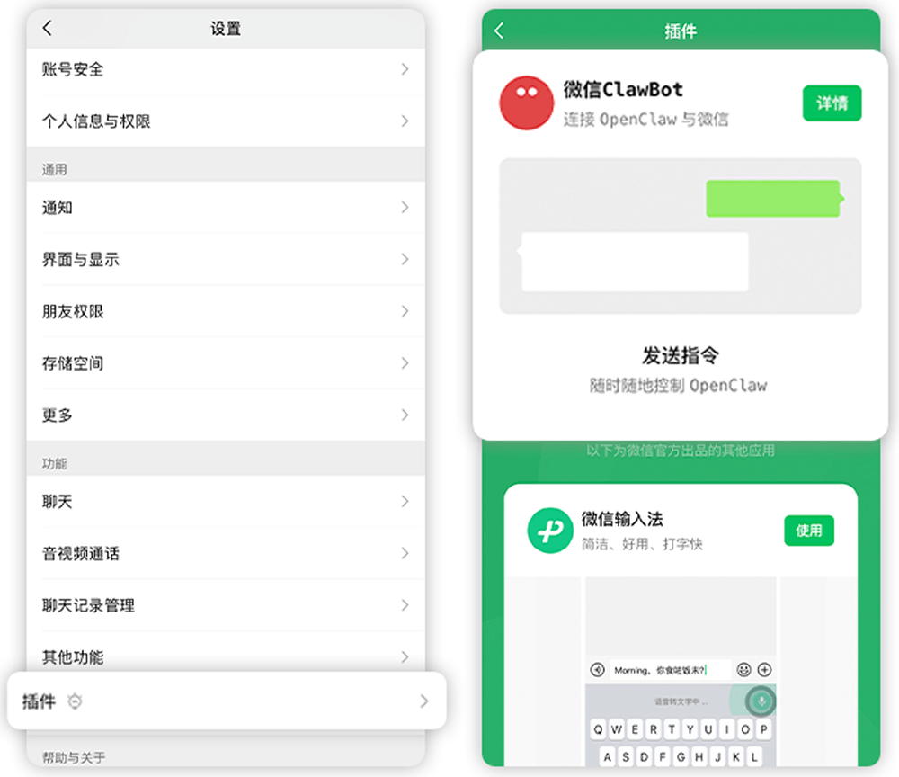
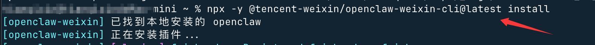
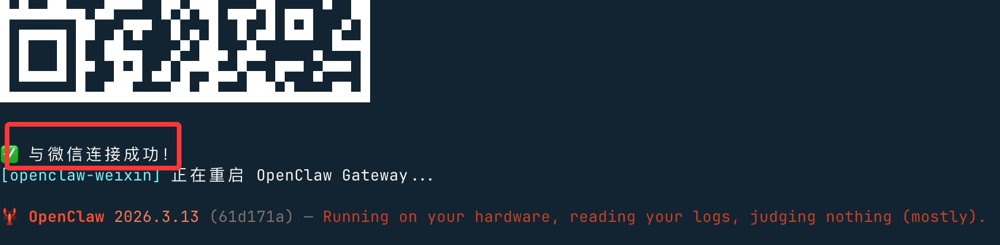
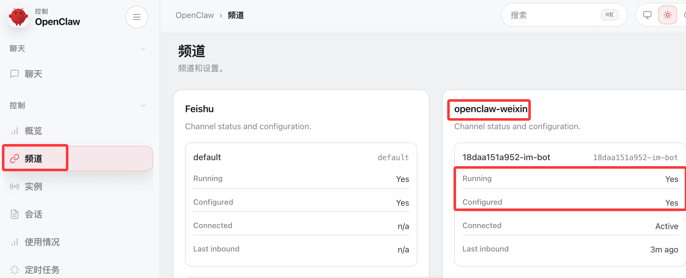
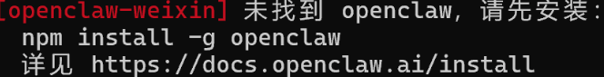
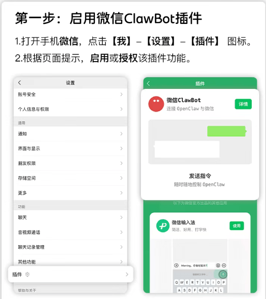
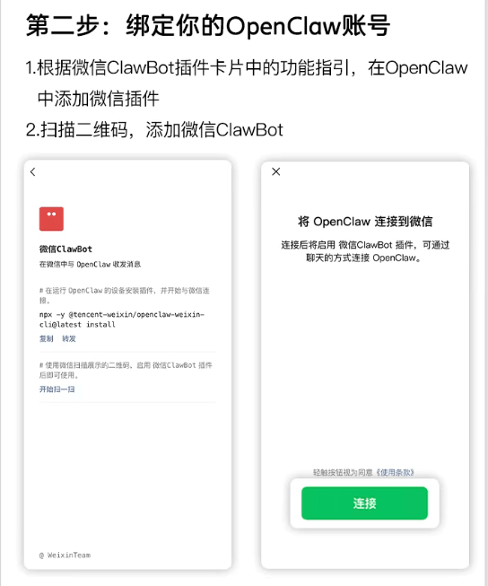
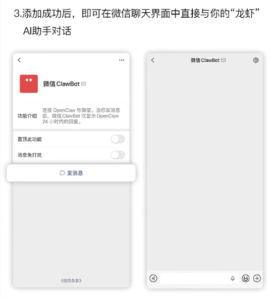

OpenClaw 微信接続
OpenClaw（旧 Clawdbot）は、オープンソースでローカル優先の AI エージェントゲートウェイです。大規模モデルをあなたのコンピューター/サーバー上で 7X24 時間稼働させることができ、コンピューターの直接操作、Web ページの閲覧、コマンド実行をサポートし、飛書、Telegram、Discord などのチャットプラットフォームにもシームレスに接続できます。
この章では、OpenClaw を飛書に接続し、メッセージ配信、画像送信、ファイル受信、承認操作、データ同期などの自動化シナリオを実現します。
OpenClaw をまだインストールしていない場合は、先にインストールする必要があります：
npm コマンドを使用してグローバルにインストール：
npm install -g openclaw@latest --registry=https://registry.npmmirror.com
または pnpm コマンドでインストール：
pnpm add -g openclaw@latest
OpenClaw のインストールは、以下で詳しく参照できます：OpenClaw (Clawdbot) チュートリアル。
個人微信ワンクリック接続（ClawBot プラグイン、iOS 8.0.70+）
前提条件
- 微信バージョン：iOS 8.0.70 以上
- OpenClaw インスタンスがデプロイされ実行されていること（ローカル/サーバーどちらでも可）
操作手順
微信を開く → 私 → 設定 → プラグイン。
「ClawBot」カードを見つけてクリックして入ると、インストールのコマンドプロンプトが表示されます。

ターミナルのインストールコマンドをコピーします（この手順を直接実行してもかまいません）：
npx -y @tencent-weixin/openclaw-weixin-cli@latest install
OpenClaw が実行されているデバイスのターミナルでこのコマンドを実行します：

コマンド実行後、QRコードが生成されるので、微信でスキャンしてバインドします：
スキャンが成功すると接続成功と表示され、再起動します：

OpenClaw のバックエンドにアクセスしてチャンネルを確認すると、微信がすでにデプロイされているのがわかります：

バインドが成功すると、微信のチャットウィンドウで直接 OpenClaw と対話できます：
Windows ユーザーの問題
Windows ユーザーが npx を使用すると、エラーが発生する可能性があります：openclaw が見つかりません。原因は、npx が Linux の which コマンドを使用して openclaw を検出するためですが、Windows には which がないため、「openclaw が見つかりません」と報告されます。

解決策として、openclaw のプラグインコマンドを使用してインストールできます：
openclaw plugins install "@tencent-weixin/openclaw-weixin"
プラグインを有効にする：
openclaw config set plugins.entries.openclaw-weixin.enabled true
QRコードログイン：
openclaw channels login --channel openclaw-weixin
ターミナルにQRコードが表示されるので、スマートフォンの微信でスキャンし、認証を確認します。
それでもプラグインのインストールが成功しない場合は、ネットユーザー@百里凌涵が提供するスクリプト cli.mjs を使用できます。package.json と LICENSE ファイルと同じディレクトリに置き、コードは以下の通りです。このスクリプトを実行するとインストールを続行できます。
node ./cli.mjs install
cli.mjsファイル内容：
import { execSync, spawnSync } from "node:child_process";
const PLUGIN_SPEC = "@tencent-weixin/openclaw-weixin";
const CHANNEL_ID = "openclaw-weixin";
// ── helpers ──────────────────────────────────────────────────────────────────
function log(msg) {
console.log(`\x1b[36m[openclaw-weixin]\x1b[0m ${msg}`);
}
function error(msg) {
console.error(`\x1b[31m[openclaw-weixin]\x1b[0m ${msg}`);
}
function run(cmd, { silent = true } = {}) {
const stdio = silent ? ["pipe", "pipe", "pipe"] : "inherit";
const result = spawnSync(cmd, { shell: true, stdio });
if (result.status !== 0) {
const err = new Error(`Command failed with exit code ${result.status}: ${cmd}`);
err.stderr = silent ? (result.stderr || "").toString() : "";
throw err;
}
return silent ? (result.stdout || "").toString().trim() : "";
}
function which(bin) {
try {
return execSync(`which ${bin}`, { encoding: "utf-8", stdio: ["pipe", "pipe", "pipe"] }).trim();
} catch {
return null;
}
}
// ── commands ─────────────────────────────────────────────────────────────────
function install() {
// 1. Check openclaw is installed
//if (!which("openclaw")) {
// error("未找到 openclaw，请先安装：");
// console.log(" npm install -g openclaw");
// console.log(" 详见 https://docs.openclaw.ai/install");
// process.exit(1);
//}
log("已找到本地安装的 openclaw");
// 2. Install plugin via openclaw
log("正在安装插件...");
try {
const installOut = run(`openclaw plugins install "${PLUGIN_SPEC}"`);
if (installOut) log(installOut);
} catch (installErr) {
if (installErr.stderr && installErr.stderr.includes("already exists")) {
log("检测到本地已安装，正在更新...");
try {
const updateOut = run(`openclaw plugins update "${CHANNEL_ID}"`);
if (updateOut) log(updateOut);
} catch (updateErr) {
error("插件更新失败，请手动执行：");
if (updateErr.stderr) console.error(updateErr.stderr);
console.log(` openclaw plugins update "${CHANNEL_ID}"`);
process.exit(1);
}
} else {
error("插件安装失败，请手动执行：");
if (installErr.stderr) console.error(installErr.stderr);
console.log(` openclaw plugins install "${PLUGIN_SPEC}"`);
process.exit(1);
}
}
// 3. Login (interactive QR scan)
log("插件就绪，开始首次连接...");
try {
run(`openclaw channels login --channel ${CHANNEL_ID}`, { silent: false });
} catch {
console.log();
error("首次连接未完成，可稍后手动重试：");
console.log(` openclaw channels login --channel ${CHANNEL_ID}`);
}
// 4. Restart gateway so it picks up the new account
log("正在重启 OpenClaw Gateway...");
try {
run(`openclaw gateway restart`, { silent: false });
} catch {
error("重启失败，可手动执行：");
console.log(` openclaw gateway restart`);
}
}
function help() {
console.log(`
使い方: npx -y @tencent-weixin/openclaw-weixin-cli <コマンド>
コマンド:
install 微信プラグインをインストールしてQRコードで接続
help ヘルプ情報を表示
`);
}
// ── main ─────────────────────────────────────────────────────────────────────
const command = process.argv[2];
switch (command) {
case "install":
install();
break;
case "help":
case "--help":
case "-h":
help();
break;
default:
if (command) {
error(`未知命令: ${command}`);
}
help();
process.exit(command ? 1 : 0);
}
package.json ファイル：
package.json
"name": "@tencent-weixin/openclaw-weixin-cli",
"version": "1.0.2",
"description": "Lightweight installer for the OpenClaw Weixin channel plugin",
"license": "MIT",
"author": "Tencent",
"type": "module",
"bin": {
"weixin-installer": "./cli.mjs"
},
"files": [
"cli.mjs"
],
"engines": {
"node": ">=22"
}
}
LICENSE ファイルのコード：
MIT License Copyright (c) 2026 Tencent Inc. Permission is hereby granted, free of charge, to any person obtaining a copy of this software and associated documentation files (the "Software"), to deal in the Software without restriction, including without limitation the rights to use, copy, modify, merge, publish, distribute, sublicense, and/or sell copies of the Software, and to permit persons to whom the Software is furnished to do so, subject to the following conditions: The above copyright notice and this permission notice shall be included in all copies or substantial portions of the Software. THE SOFTWARE IS PROVIDED "AS IS", WITHOUT WARRANTY OF ANY KIND, EXPRESS OR IMPLIED, INCLUDING BUT NOT LIMITED TO THE WARRANTIES OF MERCHANTABILITY, FITNESS FOR A PARTICULAR PURPOSE AND NONINFRINGEMENT. IN NO EVENT SHALL THE AUTHORS OR COPYRIGHT HOLDERS BE LIABLE FOR ANY CLAIM, DAMAGES OR OTHER LIABILITY, WHETHER IN AN ACTION OF CONTRACT, TORT OR OTHERWISE, ARISING FROM, OUT OF OR IN CONNECTION WITH THE SOFTWARE OR THE USE OR OTHER DEALINGS IN THE SOFTWARE.
インストール手順



その他の拡張機能
Kyon
Kys***eek@gmail.com
インストール時にエラーが発生する場合があります。以下のコードを ~/.openclaw/openclaw.json に追加する必要があります：
"plugins": { "allow": [ "openclaw-weixin" ] }Kyon
Kys***eek@gmail.com